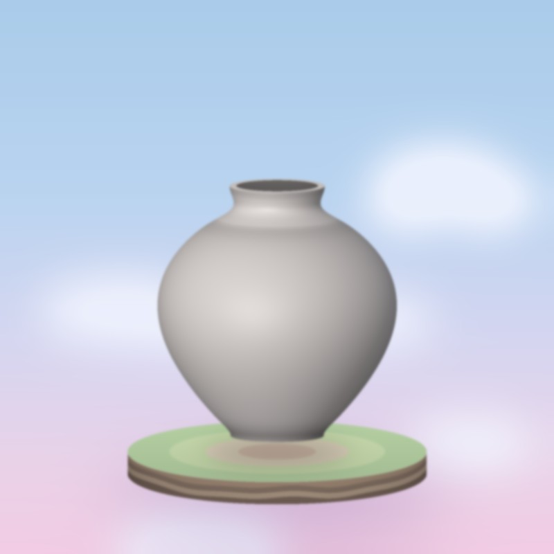
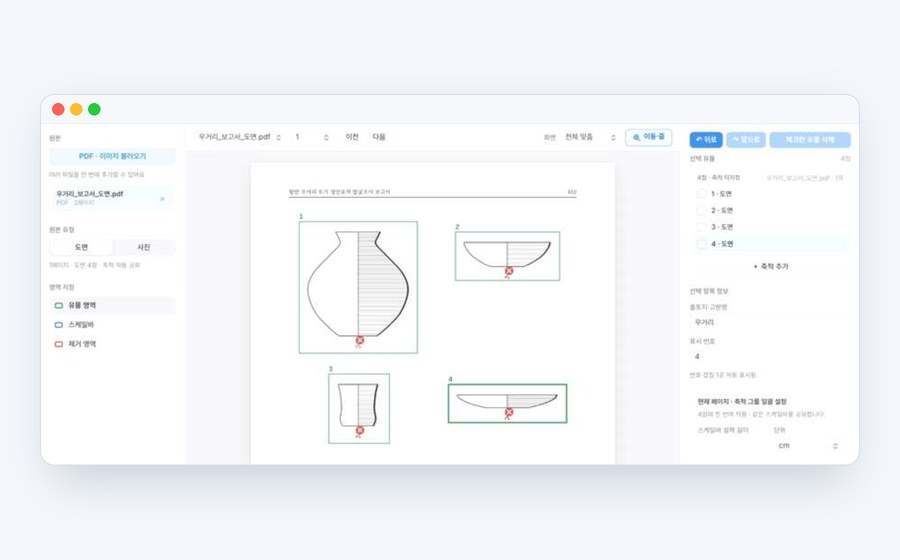
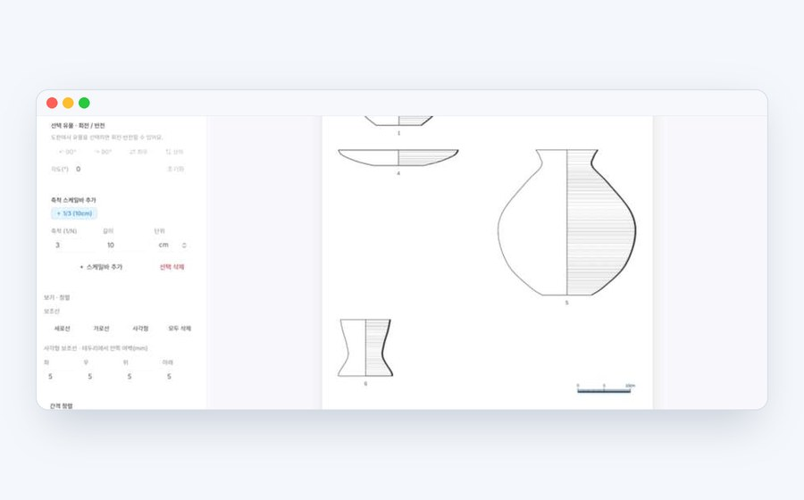
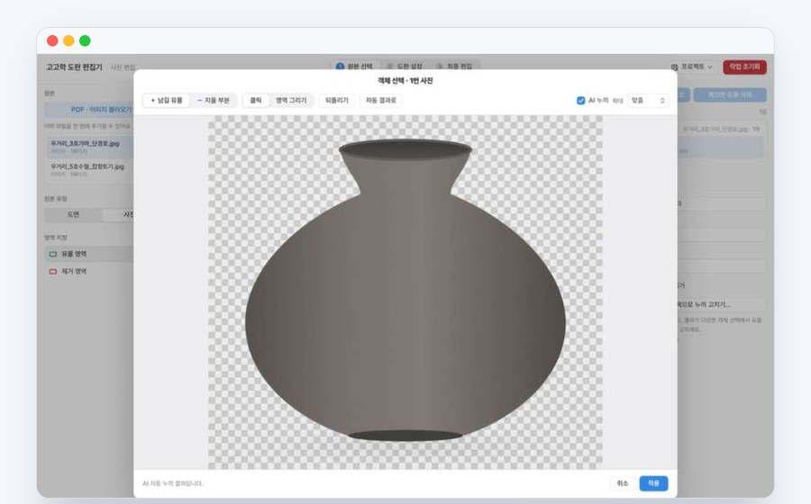
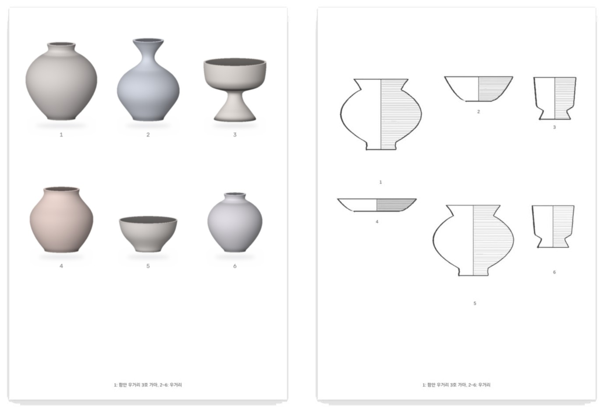
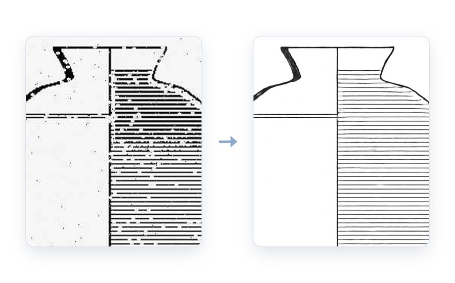

• 비상업적 연구·교육 목적이면 무료예요.
• 사용법은 사용 설명서에 있어요.
원본 선택 PDF·이미지 불러오기, 유물·스케일바 지정
도판 설정 용지·여백·글꼴·해상도
편집·저장 번호·캡션·간격 다듬고 저장
사진 AI 배경 제거, 클릭으로 보정
PDF, JPG, PNG 불러오기, SVG, PNG, JPEG, PDF로 저장, 여러 도판은 ZIP이나 여러 쪽 PDF 한 파일로, 자동 저장, 프로젝트 파일.



되는 것 실측도 추출, 스케일바 자동 판독(OCR) 및 수동 측정, AI 배경 제거 및 수동 보정, 번호랑 캡션, 회전·반전, SVG·PNG·JPEG·PDF 출력, ZIP 일괄 저장, 도면이랑 사진을 한 도판에 같이 놓기.

안 되는 것 모바일이랑 태블릿, 수정·재배포·상업적 이용(PolyForm Strict).
옛 보고서의 뭉개진 실측도를 선명한 선으로 되살리는 가벼운 AI. 웹 브라우저에서 내 컴퓨터로만 돌아가요.

합성 도면 예시, 오른쪽은 실제 모델 출력이에요.
.exe를 내려받아 실행해요..zip을 풀어요.Windows·macOS용 프로그램에는 코드 서명이 없어서, 내려받거나 처음 실행할 때 경고가 뜰 수 있어요. 학교·기관 컴퓨터에서 실행이 막히면 웹 버전을 쓰면 돼요.
···을 열고, 유지가 있으면 출처를 확인한 뒤 골라요.추가 정보 → 실행을 눌러요. Smart App Control이나 기관 정책으로 막힌 경우엔 웹 버전을 쓰면 돼요.
시스템 설정 → 개인정보 보호 및 보안에서 그래도 열기를 눌러요. “손상되어 열 수 없습니다”라고 뜨면 먼저 다시 내려받아 보고, 그래도 같으면 출처를 확인한 뒤 터미널에서 아래를 실행해요.
xattr -dr com.apple.quarantine "/Applications/고고학 도판 편집기.app"웹 버전과 설치형 프로그램은 자동 저장이 따로예요. 프로젝트 → 프로젝트 파일 저장으로 저장하고, 옮겨 간 곳에서 프로젝트 불러오기로 열면 돼요.
연구자가 정리한 선명한 실측도 444장을 옛 스캔처럼 일부러 손상시켜 ‘손상본 → 정답’ 쌍으로 작은 모델을 처음부터 학습했어요. 시험 도면 24장(240조각)에서 선 일치도 F1이 단순 확대 71.9 → small 90.2 · base 90.8.
탁본은 자동 판별하지 않고 사용자가 범위를 지정해 원본 그대로 남겨요. 편집기에는 ‘도면 복원’ 기능으로 나중에 넣을 예정이에요.
| 웹 브라우저 | Chrome · Edge 최신 버전 |
| Windows | Windows 10 · 11 |
| macOS | macOS 11 이상 |
| 화면 크기 | 가로 1280px 이상 |
| 모바일 · 태블릿 | 지원 안 함 |
| Firefox · Safari | 검증 안 함 |
( Made with ♥ · © 2026 Kim Hyun Soo (@archstudio-hs). All rights reserved. · PolyForm Strict 1.0.0 · )